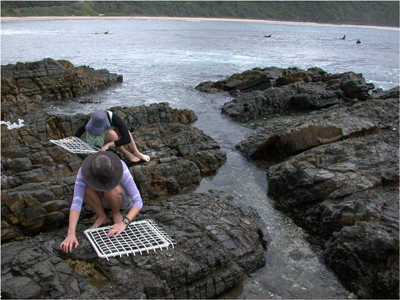

Entrada de datos

Después de recopilar datos, ser capaz de ingresar esos datos e importarlos en varios paquetes de software son habilidades esenciales para estudiantes e investigadores en las ciencias ambientales. Es posible que pienses que solo debes escribir los números en un paquete de hojas de cálculo y abrir ese archivo en otro software, pero en realidad hay bastante que aprender sobre formas ordenadas de ingresar los datos e importarlos sin errores.
En estas páginas, brindamos algunas pautas para la entrada de datos que ahorrarán mucho tiempo cuando se trate de analizar datos y crear gráficos efectivos. También describimos los tipos y la estructura de los objetos de datos en R que verás una vez que hayas importado tus datos.
- Entrada de datos - organizando los datos al ingresarlos por primera vez en una hoja de cálculo.
- Importación de datos en R.
- Tipos y estructura de datos - mejor comprensión de los objetos de datos en R